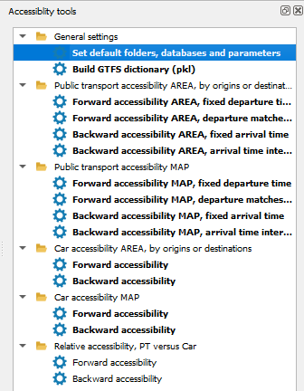
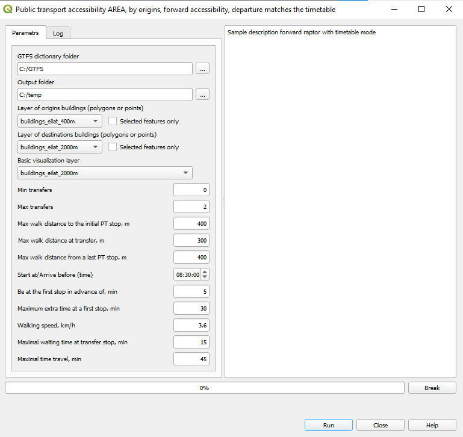

7. PT accessibility for the travelers whose decision to start depends on the PT timetable¶
7.1. The computation steps¶
Choose one of the options

In the dialog:
For Forward accessibility enter:
Maximum extra time at the first stop, min: Maximum extra time at the first stop of the trip - WHAT IS IT?
Be at the first stop in advance of (min): How long before the departure a rider must be at the first stop
For Backward accessibility enter:
Maximum extra time at the first stop, min: Maximum extra time at the first stop of the trip - WHAT IS IT?
Be at the arrival stop in advance of (min): How long before the arrival to the destination a rider must be at the final stop of a trip
5. Click Run to start. The progressbar shows the progress of the computations. The Log tab contains information about the results of the computations. You can break the computation by pressing Break.
In case the computations were based on the selection of buildings, the results will contain these buildings as a separate layer.